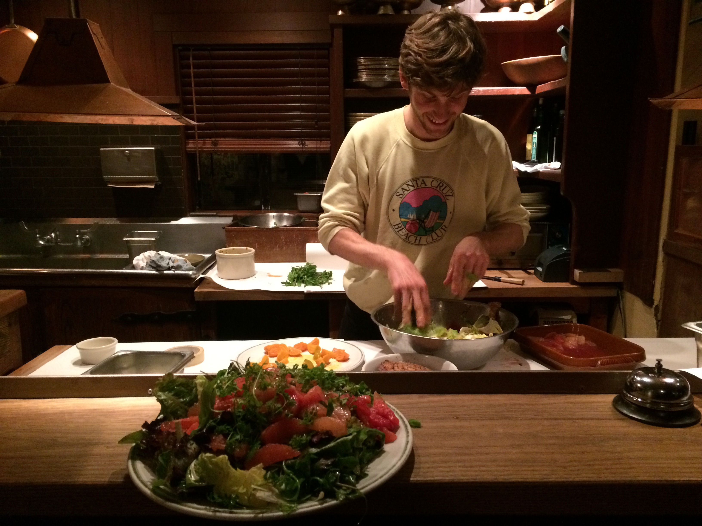

Cameron Bronstein

Remote Sensing, Machine Learning, Ecology
Who
Hi there, I’m Cameron.
I have a background in plant ecology and data science, and am interested in applications of software, remote sensing data and machine learning for ecosystem monitoring and climate mitigation.
Work
I’m a Software Engineering intern at Planet, where I work on Analytics applications and infrastructure. At Planet, we’re imaging Earth’s entire land mass every day, and empowering our users to understand land use change at increasingly granular spatial and temporal resolutions. On Analytics, we build machine learning applications that enable organizations with diverse levels of geospatial and ML expertise to understand complex dynamics of change on a global scale.
Projects
Check out some of my data science work and GIS projects on Github.
- Crop classification in Kenya using Sentinel-2 imagery
- Land cover classification in the Amazon with Planetscope
- Mendecino Complex Fire - remote sensing indices and slider
- CA wildfire time series visualizations

Writing
It’s the 21st century and I’m a millennial, so of course I have a blog. Really, this is just a place where I write about new learnings in the realm of software, ML, and earth observation. Some day, it might take on new shapes and dimensions.
Here are some of thoughts my on the Earth Observation industry and wildfire in California.
Fun Facts
-
My favorite plant is Quercus agrifolia, the California Coast Live Oak.
-
I am a Category 1 road cyclist (a life-long credential, I think). I used to have wicked tan lines and wanted to go Pro. I still ride for fun.


- I was attacked by a river otter when I was 10.
- I used to work at Chez Panisse.
